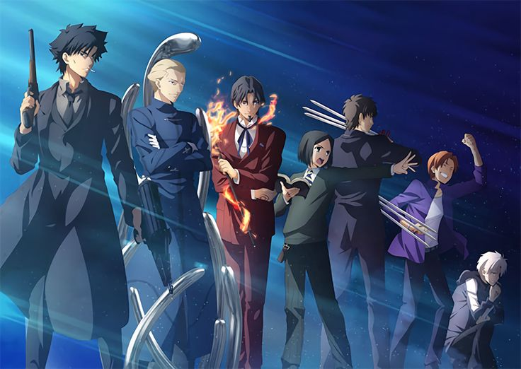

Top Dark Fantasy Anime: Epic Battles and Power Struggles You Need to
Watch
If you’re captivated by stories that blend intense action with deep,
often dark themes, dark fantasy anime offers an unmatched experience. In
recent years, series like Attack on Titan, Tokyo Ghoul, and Fate/Stay
Night: Unlimited Blade Works have captivated audiences with their
complex worlds, thrilling battles, and the internal struggles of
powerful characters. These anime don’t just deliver incredible action
scenes—they dive into morally complex narratives where heroes and
villains grapple with themes of vengeance, survival, and sacrifice. From
epic battles in historical and dystopian settings to supernatural
showdowns, this list explores top dark fantasy anime that push the
limits of heroism and explore the depths of the human spirit.
Attack on Titan
Humanity battles giant, man-eating Titans in a desperate fight for
survival within walled cities. The story unravels secrets about
the Titans and humanity’s past, with dramatic twists and powerful
action scenes.
Vinland Saga
This Viking epic follows Thorfinn, a young warrior seeking
vengeance against his father’s killer. Combining historical
accuracy with epic battles, it’s a deep exploration of loyalty,
revenge, and the brutality of war.
Tokyo Ghoul
After becoming a half-ghoul, Kaneki must navigate life in both the
human and ghoul worlds, facing constant threats and his own
struggles with identity. The story dives into the darker side of
survival and explores themes of acceptance and transformation.
Fate/Stay Night: Unlimited Blade Works
In a battle royale known as the Holy Grail War, mages summon
heroic spirits to fight for ultimate power. With intense battles,
strategic alliances, and complex characters, the story explores
the characters' desires and ambitions.
One Punch Man
Saitama is a hero who can defeat any enemy with a single punch,
leading him to long for a real challenge. This action-comedy
series satirizes the superhero genre with both humor and thrilling
fight scenes.
Ragna Crimson
In a world overrun by dragons, Ragna, a young warrior, joins
forces with the powerful Crimson to take down dragons. It’s packed
with dark themes, intense battles, and a unique take on the quest
for revenge and survival.
Demon Slayer
After demons slaughter his family, Tanjiro becomes a demon slayer
to avenge them and save his sister. Known for its breathtaking
animation and emotional depth, it’s a story of resilience, family,
and the fight against evil.
Bleach
Ichigo Kurosaki gains the powers of a Soul Reaper and finds
himself protecting the living from evil spirits. This long-running
series is filled with epic battles, complex villains, and a
journey of personal growth and heroism.
Fate/Zero

Set in a prior Holy Grail War, this prequel explores a darker side
of the Fate series, with strategic battles, high-stakes conflicts,
and morally complex characters, delving into the themes of
sacrifice and ambition.